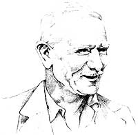

Presenting Our Environmental Hall of Fame inductee for 1983:
In the past two issues of this magazine, we introduced the first 13 members of our Environmental Hall of Fame . . . one for each year of MOTHER's existence. They were (in case you missed them) john James Audubon . . . Henry David Thoreau . . . John Muir . . . Theodore Roosevelt . . . Rachel Carson . . . David Ross Brower . . . Jerome Irving Rodale . . . Aldo Leopold . . . Jacques-Yves Cousteau . . . Barbara Ward . . . Sir Albert Howard . . . René Jules Dubos . . . and Anwar Fazal.
Now, at last, we have the privilege of introducing our first annual selection, the inductee for 1983: Richard St. Barbe Baker.
Living from 1889 to 1982, Richard St. Barbe Baker was a professional forester, author, lecturer, and conservationist. The man truly dedicated his life to planting trees: He saw more than 26 trillion of them seeded! This and other aspects of his work took him across the world. St. Barbe spent years working in Africa and New Zealand . . . initiated the "Save the Redwoods" campaign in California . . . directed the Sahara Reclamation Program . . . founded the World Forestry Charter Gatherings and the Men of the Trees society . . . and organized forestry summer schools at many universities.
In his writings, St. Barbe shares with us an intellectual philosophy and a deep spiritual vision. His books include I Planted Trees, Green Glory, Africa Drums, Famous Trees, Trees, Book of the Seasons, Among the Trees, Dance of the Trees, The Redwoods, Sahara Challenge, Land of Tane , and Sahara Conquest . The following short excerpts-reprinted with permission of the Lorian Association-are from St. Barbe's autobiography, My Life, My Trees , which was published in 1970.
I learned early to regard the forest as a society of living things, the greatest of which is the tree. Its value depends upon its permanence, its capacity to renew itself, to store water, its many biological functions including that of providing Nature's most valuable ground cover, and building up to a great height stores of one of the most adaptable of raw materials: wood.
We stand in awe and wonder at the beauty of a single tree. Tall and graceful it stands, yet robust and sinewy with spreading arms decked with foliage that changes through the seasons, hour by hour, moment by moment as shadows pass or sunshine dapples the leaves. How much more deeply are we moved as we begin to appreciate the combined operations of the assembly of trees we call a forest.
As long as a soil is covered with forest, its humus is maintained. The basic forest problem lies in its composition and regeneration. In the forest the processes of decay and growth always balance one another. The vegetable wastes together with the by-products of the animal population form a mixture on the forest floor. As we examine this mixture from time to time we find it remains practically constant in depth, in spite of annual additions from leaf-fall that take place. This mixture is drawn upon at an even rate by earthworms, fungi, and bacteria, and the resulting humus in turn is absorbed by the soil and provides the trees and undergrowth with the food materials they require. Thus the forest manures itself and with the help of the earthworms and other animals distributes this manure through the upper layers of the soil. Everything is done by Nature quietly and efficiently. No artificial fertilizers, no selective weed-killers, no pesticides, and no machinery are needed in the household of the natural forest.
In that vast evergreen forest Nature works in perfect rhythm; roots digging deep or exploring nearer the surface for food and moisture. Imperceptibly Nature builds those mighty pillars with aisles innumerable, arches multiplex, in the cathedral of the forest.
A teeming life goes on in the forest without any of the problems that confront mankind in similar circumstances. There are no dustbins to empty, no water-borne sewage, no town clerks or city councillors or armies of officials, with more and more rates to pay, no ever-growing burden of debt.
The forest solves its own sanitary problems by direct action while man evades them. The forest has been described as the perfect sanitarian, the supreme chemist. In its economy it perfectly combines Capitalism, Communism, and Social Credit and instead of building up a burden of debt it stores up real wealth-the wealth of the woods. As Henry van Dyke so aptly put it:
In the wealth of the woods since the world began The trees have offered their gifts to man.
The Ancients believed that the earth was a sentient being and responded to the behavior of man upon it. As we have no scientific proof to the contrary, should we not accept this point of view and behave accordingly?
I look at it like this: If a man loses one-third of his skin he dies; the plastic surgeons say, "He's had it." If a tree loses one-third of its bark it dies. This has been proved scientifically by botanists and dendrologists. Would it not be reasonable to suggest that if the earth loses more than a third of its green mantle and tree cover, it will assuredly die? The water table will sink beyond recall and life will become impossible.
Under existing systems food looms large and there is a constant threat of famine over wide areas, but if we treat reforestation as seriously as we do national defense, and turn from an animal economy to a sylvan one, we shall be able to look forward confidently to the time when food will worry us as little as the air we breathe. Indeed, when we have every man under his own vine and fig tree in a perfect earth, beautified by complete landscape husbandry, then with St. Francis of Assisi we shall be able to say:
"Praise be, my Lord, for our Sister, Mother Earth, which does sustain and keep us and bringeth forth diverse fruits and flowers of many colors and grass."
EDITOR'S NOTE: My Life, My Trees is available for $6.95 (include an additional 70c for shipping and handling) from the Lorian Association, Dept. TMEN, 568 Grand Canyon Drive, Madison, Wisconsin 53719.
And don't forget to write us to send in your nominations for next year's selection!
|
 |
|
|